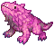
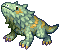

Lost in Time
Jump to navigation
Jump to search
| This quest or instance is repeatable. | ||
|---|---|---|
| Cooldown | Tickets Available | |
|
Resets at 0:00 |
Solo: 0 | Party: 0 |
Overview
| Requirements | |
|---|---|
| Base Level: | 130 |
| Starting Point: | |
| Prerequisite(s): | Gaining access to Varmundt's Mansion, step 11 |
| Rewards | |
| Experience: | - |
| Items: | Quest:6  Varmeal Tickets Varmeal Tickets
|
The Lost in Time instance is part of the Episode 17.2, check out the Sage's Legacy for more information.
Daily Quests
- Speak with Ruinan in Varmundt's Mansion () to create the instance and talk to her again to enter.
- Click on the Wood Box at the entrance of the instance and kill the Pitaya mobs.
- Talk to Silk to continue and you'll get warped to the next location.
- Talk to Silk again, kill the mobs, and repeat this until you reach the last area.
- You should have gotten two mini-map markers, you can go to either one of them.
- You'll reach a Big Meow. Walk near it and then kill it...!
- Keep moving forward until you reach the boss room and make sure you kill every single Pitaya along the way.
- Once you're in the boss room, click on the Wood Box and the Boss Meow will appear.
- Kill it and click on the Wood Box again, Silk will... reappear out of it.
- Talk to Silk to get your reward. If you have regular Pitaya tails, you'll get 4 Varmeal Tickets. If you also have a Boss Pitaya Tail, you'll get an extra 2 Varmeal Tickets.

Enemies
| Image | Name | Level | HP | Size / Race / Element |
|---|---|---|---|---|
Pitaya Boss
|
138 | 7,200,000 | Small / Plant / Fire 3 | |
|  | Red Pitaya | 132 | 158,478 | Small / Plant / Fire 1 |

|
Yellow Pitaya | 134 | 162,599 | Small / Plant / Wind 1 |

|
Blue Pitaya | 135 | 163,655 | Small / Plant / Water 1 |
| Purple Pitaya | 135 | 165,308 | Small / Plant / Poison 1 | |
|  | Green Pitaya | 136 | 165,105 | Small / Plant / Earth 1 |